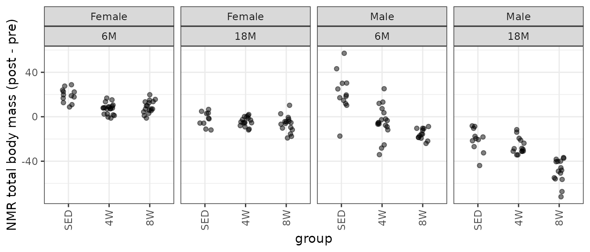
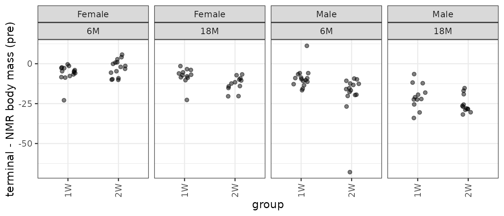
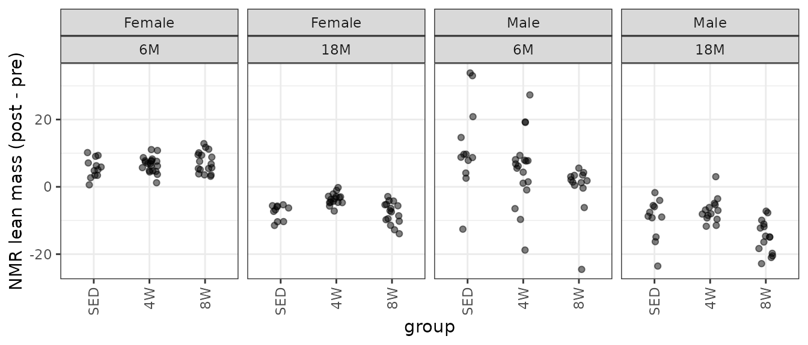
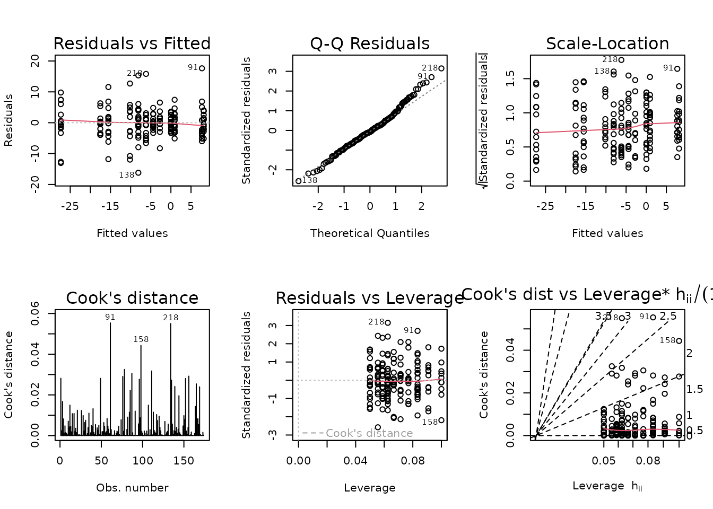
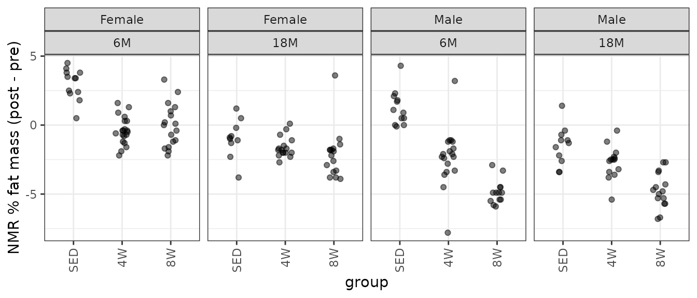
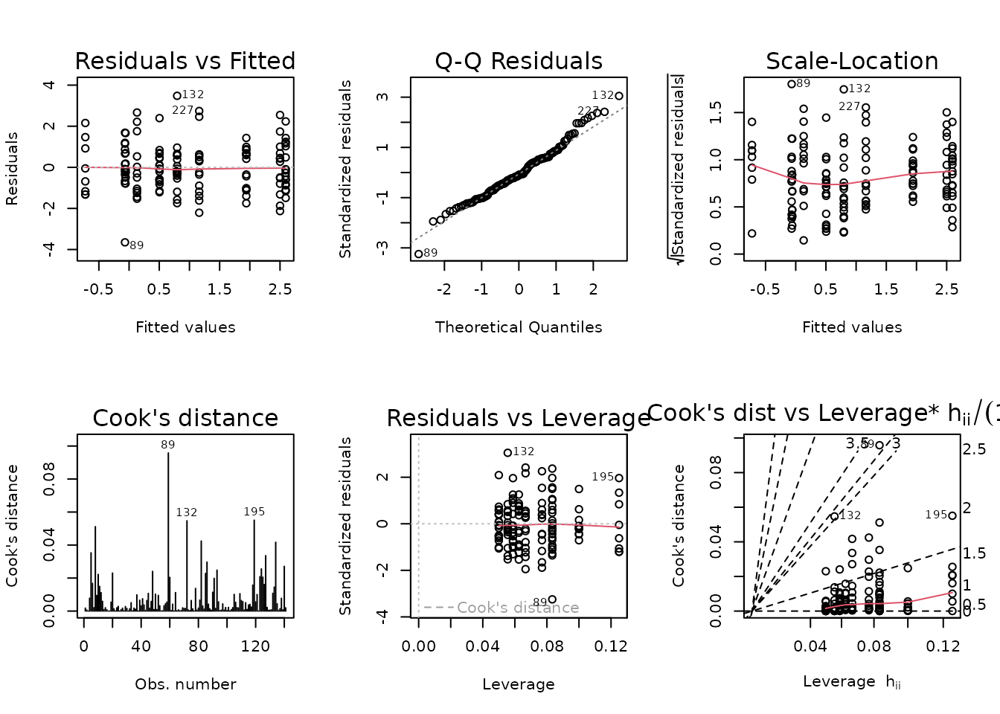
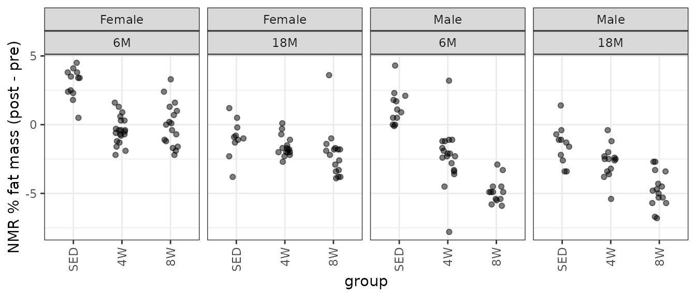
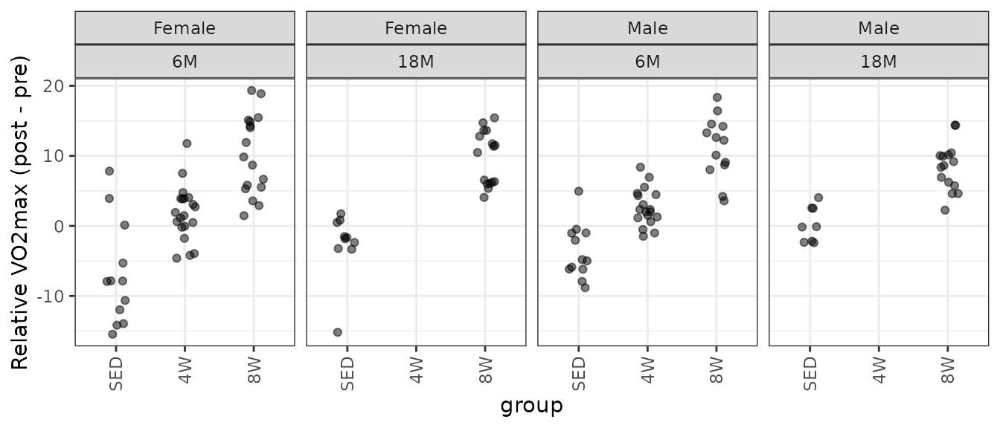

Statistical analyses of post- vs. pre-training body composition and VO2max testing measures
Tyler Sagendorf
15 July, 2023
Source:vignettes/PRE_POST_STATS.Rmd
PRE_POST_STATS.Rmd
# Required packages
library(MotrpacRatTrainingPhysiologyData)
library(ggplot2)
library(MASS)
library(dplyr)
library(emmeans)
library(tibble)
library(tidyr)
library(purrr)
library(latex2exp)
library(rstatix)
theme_set(theme_bw()) # base plot themeRegression Models
We will fit linear regression models with age, sex, group, and their interactions as predictors of the differences between post- and pre-training values for different measures of body composition and VO\(_2\)max. If heteroscedasticity is observed, we will include reciprocal group variances as weights. Certain observations may be removed if their inclusion substantially affects the model fit. Model parsimony will be achieved through ANOVA F-tests.
NMR Weight
# Plot points
NMR %>%
filter(!is.na(post_weight)) %>%
droplevels.data.frame() %>%
ggplot(aes(x = group, y = post_weight - pre_weight)) +
geom_point(position = position_jitter(width = 0.15, height = 0),
na.rm = TRUE, alpha = 0.5) +
facet_wrap(~ sex + age, nrow = 1) +
labs(y = "NMR total body mass (post - pre)") +
theme(axis.text.x = element_text(angle = 90, hjust = 1, vjust = 0.5))
There is one negative outlying value in the 6M SED male group that may affect the model fit. We will start with a WLS model, since we observe different group variances.
wt.weight <- NMR %>%
group_by(age, sex, group) %>%
mutate(1 / var(post_weight - pre_weight, na.rm = TRUE)) %>%
pull(-1)
fit.weight <- lm(I(post_weight - pre_weight) ~ age * sex * group,
weights = wt.weight,
data = NMR)
plot_lm(fit.weight)The diagnostic plots appear fine. We will try to simplify the model.
anova(fit.weight, test = "F")
#> Analysis of Variance Table
#>
#> Response: I(post_weight - pre_weight)
#> Df Sum Sq Mean Sq F value Pr(>F)
#> age 1 227.94 227.94 227.9378 < 2.2e-16 ***
#> sex 1 490.51 490.51 490.5147 < 2.2e-16 ***
#> group 2 63.78 31.89 31.8906 2.099e-12 ***
#> age:sex 1 12.36 12.36 12.3552 0.0005704 ***
#> age:group 2 16.10 8.05 8.0491 0.0004648 ***
#> sex:group 2 53.63 26.81 26.8147 8.717e-11 ***
#> age:sex:group 2 2.76 1.38 1.3816 0.2541112
#> Residuals 162 162.00 1.00
#> ---
#> Signif. codes: 0 '***' 0.001 '**' 0.01 '*' 0.05 '.' 0.1 ' ' 1The 3-way interaction is not significant, so we will remove it.

summary(fit.weight)
#>
#> Call:
#> lm(formula = I(post_weight - pre_weight) ~ age + sex + group +
#> age:sex + age:group + sex:group, data = NMR, weights = wt.weight)
#>
#> Weighted Residuals:
#> Min 1Q Median 3Q Max
#> -2.29096 -0.55221 -0.00037 0.68657 2.31574
#>
#> Coefficients:
#> Estimate Std. Error t value Pr(>|t|)
#> (Intercept) 19.657 1.763 11.149 < 2e-16 ***
#> age18M -22.194 2.555 -8.685 3.66e-15 ***
#> sexMale -1.523 3.645 -0.418 0.676679
#> group4W -12.876 2.051 -6.279 2.94e-09 ***
#> group8W -10.567 2.176 -4.856 2.78e-06 ***
#> age18M:sexMale -15.378 2.645 -5.813 3.12e-08 ***
#> age18M:group4W 11.380 2.895 3.931 0.000124 ***
#> age18M:group8W 5.974 3.177 1.881 0.061804 .
#> sexMale:group4W -6.546 3.690 -1.774 0.077943 .
#> sexMale:group8W -23.491 3.764 -6.242 3.56e-09 ***
#> ---
#> Signif. codes: 0 '***' 0.001 '**' 0.01 '*' 0.05 '.' 0.1 ' ' 1
#>
#> Residual standard error: 1.002 on 164 degrees of freedom
#> (108 observations deleted due to missingness)
#> Multiple R-squared: 0.8399, Adjusted R-squared: 0.8311
#> F-statistic: 95.59 on 9 and 164 DF, p-value: < 2.2e-161W, 2W: Terminal - Pre NMR Weight
term_nmr_df <- WEIGHTS %>%
filter(group %in% c("1W", "2W")) %>%
select(pid, iowa_id, age, sex, group, term_weight, nmr_pre_weight) %>%
mutate(diff = term_weight - nmr_pre_weight) %>%
na.omit()
# Plot points
p_term <- ggplot(term_nmr_df, aes(x = group, y = diff)) +
geom_point(position = position_jitter(width = 0.15, height = 0),
alpha = 0.5) +
facet_grid(~ sex + age) +
labs(y = "terminal - NMR weight (pre)") +
theme(axis.text.x = element_text(angle = 90, hjust = 1, vjust = 0.5))
p_term
There is an extreme observation in both 6M Male groups.
ggplot(term_nmr_df, aes(x = nmr_pre_weight, y = term_weight)) +
geom_point(na.rm = TRUE, alpha = 0.5) +
stat_smooth(method = "lm", formula = y ~ x, se = FALSE, na.rm = TRUE)
We see the outlier in the 6M 2W male group is an outlier in the scatterplot. We will plot the data without that observation.
# Remove those two points and update the plot
p_term$data <- filter(term_nmr_df, diff > -50)
p_termNearly every group has at least one outlying sample, and the groups have different variances. We will remove that extremely negative outlier and fit a WLS model.
out.term_nmr <- which(term_nmr_df$diff < -50) # 58
wt.term_nmr <- term_nmr_df %>%
mutate(term_weight = ifelse(1:n() %in% out.term_nmr,
NA, term_weight)) %>%
group_by(age, sex, group) %>%
mutate(1 / var(term_weight - nmr_pre_weight, na.rm = TRUE)) %>%
pull(-1)
fit.term_nmr <- lm(I(term_weight - nmr_pre_weight) ~ age * sex * group,
weights = wt.term_nmr,
subset = -out.term_nmr,
data = term_nmr_df)
plot_lm(fit.term_nmr)
The diagnostic plots look mostly fine. We will try to simplify the model.
anova(fit.term_nmr, test = "F")
#> Analysis of Variance Table
#>
#> Response: I(term_weight - nmr_pre_weight)
#> Df Sum Sq Mean Sq F value Pr(>F)
#> age 1 45.106 45.106 45.1065 1.19e-09 ***
#> sex 1 102.394 102.394 102.3936 < 2.2e-16 ***
#> group 1 7.376 7.376 7.3757 0.007803 **
#> age:sex 1 4.468 4.468 4.4676 0.037056 *
#> age:group 1 2.730 2.730 2.7302 0.101634
#> sex:group 1 7.001 7.001 7.0007 0.009479 **
#> age:sex:group 1 4.830 4.830 4.8301 0.030298 *
#> Residuals 99 99.000 1.000
#> ---
#> Signif. codes: 0 '***' 0.001 '**' 0.01 '*' 0.05 '.' 0.1 ' ' 1The 3-way interaction is significant, so we will not remove any terms.
summary(fit.term_nmr)
#>
#> Call:
#> lm(formula = I(term_weight - nmr_pre_weight) ~ age * sex * group,
#> data = term_nmr_df, subset = -out.term_nmr, weights = wt.term_nmr)
#>
#> Weighted Residuals:
#> Min 1Q Median 3Q Max
#> -3.1906 -0.5016 -0.0186 0.6069 3.1336
#>
#> Coefficients:
#> Estimate Std. Error t value Pr(>|t|)
#> (Intercept) -5.907 1.375 -4.295 4.08e-05 ***
#> age18M -1.810 2.066 -0.876 0.383085
#> sexMale -3.069 2.157 -1.423 0.157982
#> group2W 3.127 1.937 1.614 0.109738
#> age18M:sexMale -9.706 3.474 -2.794 0.006254 **
#> age18M:group2W -8.043 2.792 -2.881 0.004861 **
#> sexMale:group2W -9.844 2.862 -3.439 0.000854 ***
#> age18M:sexMale:group2W 9.752 4.437 2.198 0.030298 *
#> ---
#> Signif. codes: 0 '***' 0.001 '**' 0.01 '*' 0.05 '.' 0.1 ' ' 1
#>
#> Residual standard error: 1 on 99 degrees of freedom
#> Multiple R-squared: 0.6372, Adjusted R-squared: 0.6116
#> F-statistic: 24.84 on 7 and 99 DF, p-value: < 2.2e-16NMR Lean Mass
# Plot points
NMR %>%
filter(!is.na(post_lean)) %>%
droplevels.data.frame() %>%
ggplot(aes(x = group, y = post_lean - pre_lean)) +
geom_point(position = position_jitter(width = 0.15, height = 0),
na.rm = TRUE, alpha = 0.5) +
facet_wrap(~ sex + age, nrow = 1) +
labs(y = "NMR lean mass (post - pre)") +
theme(axis.text.x = element_text(angle = 90, hjust = 1, vjust = 0.5))
We observe several outlying values in several of the 6M male groups, as well as in 18M 8W males.
Observations 80 and 140 are outlying, and greatly impact group variances. We will try WLS.
NMR[c(80, 140), ] %>%
select(pid, iowa_id, age, sex, group, pre_lean, post_lean) %>%
mutate(diff = post_lean - pre_lean)
#> pid iowa_id age sex group pre_lean post_lean diff
#> 80 10023259 06M8T1 6M Male SED 188.9168 211.8662 22.9494
#> 140 10024735 06M8T3 6M Male 8W 188.7944 172.4344 -16.3600
wt.lean <- NMR %>%
group_by(age, sex, group) %>%
mutate(1 / var(post_lean - pre_lean, na.rm = TRUE)) %>%
pull(-1)
fit.lean <- update(fit.lean, weights = wt.lean)
plot_lm(fit.lean)
The diagnostic plots seem mostly fine. We will try to simplify the model.
anova(fit.lean, test = "F")
#> Analysis of Variance Table
#>
#> Response: I(post_lean - pre_lean)
#> Df Sum Sq Mean Sq F value Pr(>F)
#> age 1 28.621 28.621 28.6208 2.96e-07 ***
#> sex 1 202.760 202.760 202.7598 < 2.2e-16 ***
#> group 2 116.781 58.391 58.3906 < 2.2e-16 ***
#> age:sex 1 10.537 10.537 10.5371 0.001422 **
#> age:group 2 4.869 2.434 2.4343 0.090860 .
#> sex:group 2 14.179 7.089 7.0894 0.001118 **
#> age:sex:group 2 3.589 1.794 1.7944 0.169509
#> Residuals 162 162.000 1.000
#> ---
#> Signif. codes: 0 '***' 0.001 '**' 0.01 '*' 0.05 '.' 0.1 ' ' 1
fit.lean.1 <- update(fit.lean, formula = . ~ sex * (age + group))
fit.lean.2 <- update(fit.lean.1, formula = . ~ . + age:group)
anova(fit.lean.1, fit.lean.2, fit.lean, test = "F")
#> Analysis of Variance Table
#>
#> Model 1: I(post_lean - pre_lean) ~ sex + age + group + sex:age + sex:group
#> Model 2: I(post_lean - pre_lean) ~ sex + age + group + sex:age + sex:group +
#> age:group
#> Model 3: I(post_lean - pre_lean) ~ age * sex * group
#> Res.Df RSS Df Sum of Sq F Pr(>F)
#> 1 166 172.88
#> 2 164 165.59 2 7.2930 3.6465 0.02825 *
#> 3 162 162.00 2 3.5889 1.7944 0.16951
#> ---
#> Signif. codes: 0 '***' 0.001 '**' 0.01 '*' 0.05 '.' 0.1 ' ' 1There is no significant difference between the second and third models, so we will use the simpler one.
fit.lean <- fit.lean.2
plot_lm(fit.lean)
summary(fit.lean)
#>
#> Call:
#> lm(formula = I(post_lean - pre_lean) ~ sex + age + group + sex:age +
#> sex:group + age:group, data = NMR, weights = wt.lean)
#>
#> Weighted Residuals:
#> Min 1Q Median 3Q Max
#> -3.3795 -0.4853 -0.0457 0.5679 3.0351
#>
#> Coefficients:
#> Estimate Std. Error t value Pr(>|t|)
#> (Intercept) -4.9746 0.8038 -6.189 4.68e-09 ***
#> sexMale 3.7435 1.6736 2.237 0.026646 *
#> age18M -1.5264 0.9812 -1.556 0.121707
#> group4W 7.5303 1.0137 7.428 5.72e-12 ***
#> group8W 6.6716 1.1186 5.964 1.46e-08 ***
#> sexMale:age18M 4.3465 1.3856 3.137 0.002025 **
#> sexMale:group4W 1.1925 1.6630 0.717 0.474337
#> sexMale:group8W 6.5600 1.9305 3.398 0.000852 ***
#> age18M:group4W -2.4403 1.2295 -1.985 0.048847 *
#> age18M:group8W -3.8426 1.4920 -2.575 0.010894 *
#> ---
#> Signif. codes: 0 '***' 0.001 '**' 0.01 '*' 0.05 '.' 0.1 ' ' 1
#>
#> Residual standard error: 1.005 on 164 degrees of freedom
#> (108 observations deleted due to missingness)
#> Multiple R-squared: 0.6952, Adjusted R-squared: 0.6785
#> F-statistic: 41.57 on 9 and 164 DF, p-value: < 2.2e-16NMR Fat Mass
# Plot points
NMR %>%
filter(!is.na(post_fat)) %>%
droplevels.data.frame() %>%
ggplot(aes(x = group, y = post_fat - pre_fat)) +
geom_point(position = position_jitter(width = 0.15, height = 0),
na.rm = TRUE, alpha = 0.5) +
facet_wrap(~ sex + age, nrow = 1) +
labs(y = "NMR fat mass (post - pre)") +
theme(axis.text.x = element_text(angle = 90, hjust = 1, vjust = 0.5))
We observe unequal group variances, and several outlying values (especially in the 6M 4W male group). We will fit a WLS model with reciprocal group variances as weights.
wt.fat <- NMR %>%
group_by(age, sex, group) %>%
mutate(1 / var(post_fat - pre_fat, na.rm = TRUE)) %>%
pull(-1)
fit.fat <- lm(I(post_fat - pre_fat) ~ age * sex * group,
weights = wt.fat,
data = NMR)
plot_lm(fit.fat)
The diagnostic plots seem mostly fine. We will try to simplify the model.
anova(fit.fat, test = "F")
#> Analysis of Variance Table
#>
#> Response: I(post_fat - pre_fat)
#> Df Sum Sq Mean Sq F value Pr(>F)
#> age 1 95.84 95.84 95.8358 < 2.2e-16 ***
#> sex 1 335.44 335.44 335.4412 < 2.2e-16 ***
#> group 2 194.96 97.48 97.4800 < 2.2e-16 ***
#> age:sex 1 0.21 0.21 0.2081 0.6488718
#> age:group 2 17.32 8.66 8.6593 0.0002673 ***
#> sex:group 2 94.30 47.15 47.1524 < 2.2e-16 ***
#> age:sex:group 2 1.30 0.65 0.6485 0.5241943
#> Residuals 162 162.00 1.00
#> ---
#> Signif. codes: 0 '***' 0.001 '**' 0.01 '*' 0.05 '.' 0.1 ' ' 1We will remove the 3-way interaction and the sex:age
interaction.
fit.1 <- update(fit.fat, formula = . ~ group * (sex + age))
anova(fit.1, fit.fat, test = "F")
#> Analysis of Variance Table
#>
#> Model 1: I(post_fat - pre_fat) ~ group + sex + age + group:sex + group:age
#> Model 2: I(post_fat - pre_fat) ~ age * sex * group
#> Res.Df RSS Df Sum of Sq F Pr(>F)
#> 1 165 163.85
#> 2 162 162.00 3 1.8466 0.6155 0.6059There is no significant difference between the models, so we will use the simpler one.
fit.fat <- fit.1
plot_lm(fit.fat)
summary(fit.fat)
#>
#> Call:
#> lm(formula = I(post_fat - pre_fat) ~ group + sex + age + group:sex +
#> group:age, data = NMR, weights = wt.fat)
#>
#> Weighted Residuals:
#> Min 1Q Median 3Q Max
#> -2.4813 -0.6232 -0.0018 0.4985 3.0679
#>
#> Coefficients:
#> Estimate Std. Error t value Pr(>|t|)
#> (Intercept) 5.5293 0.5677 9.740 < 2e-16 ***
#> group4W -6.2398 0.6957 -8.969 6.33e-16 ***
#> group8W -5.6441 0.8608 -6.557 6.74e-10 ***
#> sexMale -2.0273 1.1535 -1.757 0.080690 .
#> age18M -8.4595 1.0712 -7.897 3.79e-13 ***
#> group4W:sexMale -5.3791 1.5854 -3.393 0.000866 ***
#> group8W:sexMale -13.8861 1.4743 -9.419 < 2e-16 ***
#> group4W:age18M 5.4420 1.2157 4.476 1.41e-05 ***
#> group8W:age18M 3.5740 1.4658 2.438 0.015822 *
#> ---
#> Signif. codes: 0 '***' 0.001 '**' 0.01 '*' 0.05 '.' 0.1 ' ' 1
#>
#> Residual standard error: 0.9965 on 165 degrees of freedom
#> (108 observations deleted due to missingness)
#> Multiple R-squared: 0.8182, Adjusted R-squared: 0.8094
#> F-statistic: 92.84 on 8 and 165 DF, p-value: < 2.2e-16NMR % Lean Mass
# Plot points
NMR %>%
filter(!is.na(post_lean_pct)) %>%
droplevels.data.frame() %>%
ggplot(aes(x = group, y = post_lean_pct - pre_lean_pct)) +
geom_point(position = position_jitter(width = 0.15, height = 0),
na.rm = TRUE, alpha = 0.5) +
facet_wrap(~ sex + age, nrow = 1) +
labs(y = "NMR % lean mass (post - pre)") +
theme(axis.text.x = element_text(angle = 90, hjust = 1, vjust = 0.5))
We observe several outlying values in several of the 6M male groups, similar to the plot of the differences in lean mass. We also observe unequal group variances, so we will fit a WLS model with reciprocal group variances as weights.
wt.lean_pct <- NMR %>%
group_by(sex, group, age) %>%
mutate(1 / var(post_lean_pct - pre_lean_pct, na.rm = TRUE)) %>%
pull(-1)
fit.lean_pct <- lm(I(post_lean_pct - pre_lean_pct) ~ age * sex * group,
weights = wt.lean_pct,
data = NMR)
plot_lm(fit.lean_pct)The diagnostic plots look mostly fine. We will try to simplify the model.
anova(fit.lean_pct, test = "F")
#> Analysis of Variance Table
#>
#> Response: I(post_lean_pct - pre_lean_pct)
#> Df Sum Sq Mean Sq F value Pr(>F)
#> age 1 16.900 16.900 16.9003 6.246e-05 ***
#> sex 1 222.038 222.038 222.0380 < 2.2e-16 ***
#> group 2 113.016 56.508 56.5079 < 2.2e-16 ***
#> age:sex 1 6.648 6.648 6.6481 0.010816 *
#> age:group 2 12.336 6.168 6.1679 0.002621 **
#> sex:group 2 11.304 5.652 5.6519 0.004239 **
#> age:sex:group 2 4.490 2.245 2.2451 0.109202
#> Residuals 162 162.000 1.000
#> ---
#> Signif. codes: 0 '***' 0.001 '**' 0.01 '*' 0.05 '.' 0.1 ' ' 1We will remove the 3-way interaction.

The QQ-plot looks slightly worse, so we will retain all terms.
summary(fit.lean_pct)
#>
#> Call:
#> lm(formula = I(post_lean_pct - pre_lean_pct) ~ age * sex * group,
#> data = NMR, weights = wt.lean_pct)
#>
#> Weighted Residuals:
#> Min 1Q Median 3Q Max
#> -2.99876 -0.50801 -0.02364 0.59012 2.92545
#>
#> Coefficients:
#> Estimate Std. Error t value Pr(>|t|)
#> (Intercept) -2.8167 0.4417 -6.376 1.81e-09 ***
#> age18M 0.1667 0.5100 0.327 0.744229
#> sexMale 2.7167 0.8199 3.313 0.001137 **
#> group4W 4.1067 0.5736 7.159 2.68e-11 ***
#> group8W 3.9637 0.6313 6.278 3.02e-09 ***
#> age18M:sexMale 0.1879 0.9243 0.203 0.839184
#> age18M:group4W -2.0317 0.6665 -3.048 0.002690 **
#> age18M:group8W -3.0637 0.7886 -3.885 0.000149 ***
#> sexMale:group4W -1.4956 0.9676 -1.546 0.124159
#> sexMale:group8W -1.1945 1.1742 -1.017 0.310551
#> age18M:sexMale:group4W 0.8874 1.1120 0.798 0.426026
#> age18M:sexMale:group8W 2.7733 1.3421 2.066 0.040385 *
#> ---
#> Signif. codes: 0 '***' 0.001 '**' 0.01 '*' 0.05 '.' 0.1 ' ' 1
#>
#> Residual standard error: 1 on 162 degrees of freedom
#> (108 observations deleted due to missingness)
#> Multiple R-squared: 0.7048, Adjusted R-squared: 0.6847
#> F-statistic: 35.16 on 11 and 162 DF, p-value: < 2.2e-16NMR % Fat Mass
# Plot points
NMR %>%
filter(!is.na(post_fat_pct)) %>%
droplevels.data.frame() %>%
ggplot(aes(x = group, y = post_fat_pct - pre_fat_pct)) +
geom_point(position = position_jitter(width = 0.15, height = 0),
na.rm = TRUE, alpha = 0.5) +
facet_wrap(~ sex + age, nrow = 1) +
labs(y = "NMR % fat mass (post - pre)") +
theme(axis.text.x = element_text(angle = 90, hjust = 1, vjust = 0.5))
There are several groups with outlying values: mainly, two from the 6M 4W males and one from the 18M 8W females. We will try an OLS model first.
fit.fat_pct <- lm(I(post_fat_pct - pre_fat_pct) ~ age * sex * group,
data = NMR)
plot_lm(fit.fat_pct)
Those extreme values are being flagged in the diagnostic plots.
NMR[c(136, 138, 218), ] %>%
select(pid, iowa_id, age, sex, group, post_fat_pct, pre_fat_pct) %>%
mutate(diff = post_fat_pct - pre_fat_pct)
#> pid iowa_id age sex group post_fat_pct pre_fat_pct diff
#> 136 10185585 06M4T17 6M Male 4W 15.4 12.2 3.2
#> 138 10219315 06M4T19 6M Male 4W 10.1 17.9 -7.8
#> 218 11623578 18F8T29 18M Female 8W 17.9 14.3 3.6The two outliers in the 6M 4W male group are about equidistant from the mean of the other values, so their removal will only shrink the variance of the group. Removal of the 18M 8W female sample, however, will reduce the variance and shift the mean away from 0. We will try a WLS model and remove these observations, since they have a huge impact on the group variances and would shift the right tail of the QQ-plot if they were included.
# We will remove these values, but keep the rows.
# This is so we can use the subset argument in update, which
# is easier to keep track of when we extract model info later.
wt.fat_pct <- NMR %>%
mutate(idx = 1:n(),
post_fat_pct = ifelse(idx %in% c(136, 138, 218),
NA, post_fat_pct)) %>%
group_by(age, sex, group) %>%
mutate(1 / var(post_fat_pct - pre_fat_pct, na.rm = TRUE)) %>%
pull(-1)
fit.fat_pct <- update(fit.fat_pct,
subset = -c(136, 138, 218),
weights = wt.fat_pct)
plot_lm(fit.fat_pct)The diagnostic plots look fine. We will try to simplify the model.
anova(fit.fat_pct, test = "F")
#> Analysis of Variance Table
#>
#> Response: I(post_fat_pct - pre_fat_pct)
#> Df Sum Sq Mean Sq F value Pr(>F)
#> age 1 47.211 47.211 47.2106 1.366e-10 ***
#> sex 1 197.607 197.607 197.6068 < 2.2e-16 ***
#> group 2 269.226 134.613 134.6130 < 2.2e-16 ***
#> age:sex 1 11.809 11.809 11.8088 0.0007523 ***
#> age:group 2 34.278 17.139 17.1388 1.818e-07 ***
#> sex:group 2 32.821 16.411 16.4107 3.317e-07 ***
#> age:sex:group 2 5.052 2.526 2.5258 0.0831965 .
#> Residuals 159 159.000 1.000
#> ---
#> Signif. codes: 0 '***' 0.001 '**' 0.01 '*' 0.05 '.' 0.1 ' ' 1We will remove the 3-way interaction.
The diagnostic plots still look fine.
summary(fit.fat_pct)
#>
#> Call:
#> lm(formula = I(post_fat_pct - pre_fat_pct) ~ age + sex + group +
#> age:sex + age:group + sex:group, data = NMR, subset = -c(136,
#> 138, 218), weights = wt.fat_pct)
#>
#> Weighted Residuals:
#> Min 1Q Median 3Q Max
#> -2.48444 -0.64666 -0.03925 0.57976 2.42922
#>
#> Coefficients:
#> Estimate Std. Error t value Pr(>|t|)
#> (Intercept) 3.0417 0.3060 9.941 < 2e-16 ***
#> age18M -4.0871 0.4308 -9.487 < 2e-16 ***
#> sexMale -1.8361 0.4104 -4.474 1.45e-05 ***
#> group4W -3.3109 0.3623 -9.138 2.62e-16 ***
#> group8W -3.4846 0.4320 -8.066 1.57e-13 ***
#> age18M:sexMale 1.4599 0.3508 4.162 5.12e-05 ***
#> age18M:group4W 2.6597 0.4649 5.721 5.04e-08 ***
#> age18M:group8W 2.2262 0.5020 4.435 1.70e-05 ***
#> sexMale:group4W -0.3666 0.4612 -0.795 0.428
#> sexMale:group8W -2.3718 0.4976 -4.766 4.17e-06 ***
#> ---
#> Signif. codes: 0 '***' 0.001 '**' 0.01 '*' 0.05 '.' 0.1 ' ' 1
#>
#> Residual standard error: 1.009 on 161 degrees of freedom
#> (108 observations deleted due to missingness)
#> Multiple R-squared: 0.7833, Adjusted R-squared: 0.7712
#> F-statistic: 64.66 on 9 and 161 DF, p-value: < 2.2e-16Absolute VO\(_2\)max
# Plot points
VO2MAX %>%
filter(!is.na(post_vo2max_ml_min)) %>%
droplevels.data.frame() %>%
ggplot(aes(x = group, y = post_vo2max_ml_min - pre_vo2max_ml_min)) +
geom_point(position = position_jitter(width = 0.15, height = 0),
na.rm = TRUE, alpha = 0.5) +
facet_wrap(~ sex + age, nrow = 1) +
labs(y = TeX("Absolute VO$_2$max (post - pre)")) +
theme(axis.text.x = element_text(angle = 90, hjust = 1, vjust = 0.5))Several groups have both large and small outlying values. Namely, 6M SED and 4W males and 18M SED females. Also, we do not have data for the 18M 4W groups of either sex, so certain coefficients will be inestimable. To handle this, we will combine age and group into a single factor.
# Concatenate age and group
VO2MAX <- mutate(VO2MAX, age_group = paste0(age, "_", group))
fit.vo2max_abs <- lm(I(post_vo2max_ml_min - pre_vo2max_ml_min) ~
age_group * sex,
data = VO2MAX)
plot_lm(fit.vo2max_abs)The diagnostic plots look mostly fine. We will try to simplify the model.
anova(fit.vo2max_abs, test = "F")
#> Analysis of Variance Table
#>
#> Response: I(post_vo2max_ml_min - pre_vo2max_ml_min)
#> Df Sum Sq Mean Sq F value Pr(>F)
#> age_group 4 157.901 39.475 27.6274 <2e-16 ***
#> sex 1 0.977 0.977 0.6836 0.4099
#> age_group:sex 4 4.952 1.238 0.8665 0.4860
#> Residuals 131 187.179 1.429
#> ---
#> Signif. codes: 0 '***' 0.001 '**' 0.01 '*' 0.05 '.' 0.1 ' ' 1
fit.vo2max_abs.1 <- update(fit.vo2max_abs, formula = . ~ age_group)
anova(fit.vo2max_abs.1, fit.vo2max_abs, test = "F")
#> Analysis of Variance Table
#>
#> Model 1: I(post_vo2max_ml_min - pre_vo2max_ml_min) ~ age_group
#> Model 2: I(post_vo2max_ml_min - pre_vo2max_ml_min) ~ age_group * sex
#> Res.Df RSS Df Sum of Sq F Pr(>F)
#> 1 136 193.11
#> 2 131 187.18 5 5.9291 0.8299 0.5306There is no significant difference between the models, so we will use the simpler one.
fit.vo2max_abs <- fit.vo2max_abs.1
plot_lm(fit.vo2max_abs)
The diagnostic plots look fine.
summary(fit.vo2max_abs)
#>
#> Call:
#> lm(formula = I(post_vo2max_ml_min - pre_vo2max_ml_min) ~ age_group,
#> data = VO2MAX)
#>
#> Residuals:
#> Min 1Q Median 3Q Max
#> -3.7503 -0.7707 -0.0559 0.7447 3.6341
#>
#> Coefficients:
#> Estimate Std. Error t value Pr(>|t|)
#> (Intercept) 1.5641 0.2140 7.308 2.08e-11 ***
#> age_group18M_SED -2.2021 0.3531 -6.236 5.28e-09 ***
#> age_group6M_4W -0.9218 0.2884 -3.196 0.00173 **
#> age_group6M_8W 0.9896 0.3052 3.243 0.00149 **
#> age_group6M_SED -1.5323 0.3240 -4.729 5.56e-06 ***
#> ---
#> Signif. codes: 0 '***' 0.001 '**' 0.01 '*' 0.05 '.' 0.1 ' ' 1
#>
#> Residual standard error: 1.192 on 136 degrees of freedom
#> (93 observations deleted due to missingness)
#> Multiple R-squared: 0.4498, Adjusted R-squared: 0.4337
#> F-statistic: 27.8 on 4 and 136 DF, p-value: < 2.2e-16VO\(_2\)max (relative to total body mass)
# Plot points
VO2MAX %>%
filter(!is.na(post_vo2max_ml_kg_min)) %>%
droplevels.data.frame() %>%
ggplot(aes(x = group,
y = post_vo2max_ml_kg_min - pre_vo2max_ml_kg_min)) +
geom_point(position = position_jitter(width = 0.15, height = 0),
na.rm = TRUE, alpha = 0.5) +
facet_grid(~ sex + age) +
labs(y = "Relative VO2max (post - pre)") +
theme(axis.text.x = element_text(angle = 90, hjust = 1, vjust = 0.5))
There is an outlying sample in the 18M SED female group.
fit.vo2max_rel <- lm(I(post_vo2max_ml_kg_min - pre_vo2max_ml_kg_min) ~
age_group * sex,
data = VO2MAX)
plot_lm(fit.vo2max_rel)The diagnostic plots look mostly fine, though we observe unequal group variances. We will try a WLS model.
wt.vo2max_rel <- VO2MAX %>%
group_by(age_group, sex) %>%
mutate(1 / var(post_vo2max_ml_kg_min - pre_vo2max_ml_kg_min,
na.rm = TRUE)) %>%
pull(-1)
fit.vo2max_rel <- update(fit.vo2max_rel, weights = wt.vo2max_rel)
plot_lm(fit.vo2max_rel)The diagnostic plots look a bit better, and the mean-variance relationship appears constant. We will try to simplify the model.
anova(fit.vo2max_rel, test = "F")
#> Analysis of Variance Table
#>
#> Response: I(post_vo2max_ml_kg_min - pre_vo2max_ml_kg_min)
#> Df Sum Sq Mean Sq F value Pr(>F)
#> age_group 4 228.913 57.228 57.2284 <2e-16 ***
#> sex 1 1.270 1.270 1.2704 0.2618
#> age_group:sex 4 5.132 1.283 1.2829 0.2800
#> Residuals 131 131.000 1.000
#> ---
#> Signif. codes: 0 '***' 0.001 '**' 0.01 '*' 0.05 '.' 0.1 ' ' 1
fit.vo2max_rel.1 <- update(fit.vo2max_rel, formula = . ~ age_group)
anova(fit.vo2max_rel.1, fit.vo2max_rel, test = "F")
#> Analysis of Variance Table
#>
#> Model 1: I(post_vo2max_ml_kg_min - pre_vo2max_ml_kg_min) ~ age_group
#> Model 2: I(post_vo2max_ml_kg_min - pre_vo2max_ml_kg_min) ~ age_group *
#> sex
#> Res.Df RSS Df Sum of Sq F Pr(>F)
#> 1 136 137.4
#> 2 131 131.0 5 6.4021 1.2804 0.2762There is no significant difference between the models, so we will use the simpler one.
fit.vo2max_rel <- fit.vo2max_rel.1
plot_lm(fit.vo2max_rel)The diagnostic plots look about the same.
summary(fit.vo2max_rel)
#>
#> Call:
#> lm(formula = I(post_vo2max_ml_kg_min - pre_vo2max_ml_kg_min) ~
#> age_group, data = VO2MAX, weights = wt.vo2max_rel)
#>
#> Weighted Residuals:
#> Min 1Q Median 3Q Max
#> -3.0983 -0.7180 -0.1406 0.6170 2.4047
#>
#> Coefficients:
#> Estimate Std. Error t value Pr(>|t|)
#> (Intercept) 9.0097 0.6537 13.782 < 2e-16 ***
#> age_group18M_SED -9.5178 1.0111 -9.413 < 2e-16 ***
#> age_group6M_4W -6.6448 0.8319 -7.987 5.21e-13 ***
#> age_group6M_8W 1.7430 1.1310 1.541 0.126
#> age_group6M_SED -13.4094 1.1939 -11.232 < 2e-16 ***
#> ---
#> Signif. codes: 0 '***' 0.001 '**' 0.01 '*' 0.05 '.' 0.1 ' ' 1
#>
#> Residual standard error: 1.005 on 136 degrees of freedom
#> (93 observations deleted due to missingness)
#> Multiple R-squared: 0.6249, Adjusted R-squared: 0.6139
#> F-statistic: 56.64 on 4 and 136 DF, p-value: < 2.2e-16Maximum Run Speed
Since run speed was increased in 1.8 m/min increments, as defined in the training protocol, it may be better to use a non-parametric test. Rather than plotting the individual points for the differences, since they can only take on a few different values, we will instead count the number of samples that take on a particular value in each group and scale the points accordingly.
# Plot points
VO2MAX %>%
mutate(diff = post_speed_max - pre_speed_max) %>%
filter(!is.na(diff)) %>%
droplevels.data.frame() %>%
count(age, sex, group, diff) %>%
ggplot(aes(x = group, y = diff, size = n)) +
geom_point(na.rm = TRUE) +
facet_grid(~ age + sex) +
scale_size_area(max_size = 5) +
labs(y = "Maximum Run Speed (post - pre)") +
theme(axis.text.x = element_text(angle = 90, hjust = 1, vjust = 0.5))Most groups only take on 4 or 5 different values. We will use Wilcoxon Rank Sum tests to compare each trained group to their matching control group. We will adjust p-values within each age and sex group after we set up comparisons for all measures.
# Testing the differences is equivalent to a paired test
speed_res <- VO2MAX %>%
filter(!is.na(post_speed_max)) %>%
mutate(speed_diff = post_speed_max - pre_speed_max) %>%
group_by(age, sex, group) %>%
wilcox_test(formula = speed_diff ~ 1, mu = 0,
detailed = TRUE,
p.adjust.method = "none") %>%
as.data.frame() %>%
dplyr::rename(p.value = p,
lower.CL = conf.low,
upper.CL = conf.high,
W.ratio = statistic) %>%
mutate(across(.cols = where(is.numeric),
~ ifelse(is.nan(.x), NA, .x))) %>%
ungroup() %>%
dplyr::select(age, sex, group, estimate, lower.CL, upper.CL,
n, W.ratio, p.value)Comparisons
We will test if group means are different from 0 and adjust p-values using the Holm procedure within each combination of sex and age.
# We will include the maximum run speed test results at the end
model_list <- list("NMR Weight" = fit.weight,
"Term - NMR Pre Weight" = fit.term_nmr,
"NMR Lean Mass" = fit.lean,
"NMR Fat Mass" = fit.fat,
"NMR % Lean" = fit.lean_pct,
"NMR % Fat" = fit.fat_pct,
"Absolute VO2max" = fit.vo2max_abs,
"Relative VO2max" = fit.vo2max_rel)
# Extract model info
model_df <- model_list %>%
map_chr(.f = ~ paste(deparse(.x[["call"]]), collapse = "")) %>%
enframe(name = "response",
value = "model") %>%
mutate(model = gsub("(?<=[\\s])\\s*|^\\s+|\\s+$", "", model, perl = TRUE),
model_type = sub("^([^\\(]+).*", "\\1", model),
formula = sub(".*formula = ([^,]+),.*", "\\1", model),
family = sub(".*family = ([^\\)]+\\)),.*", "\\1", model),
family = ifelse(model_type == "lm", "gaussian", family),
# if weights were used, they were reciprocal group variances
weights = ifelse(grepl("weights = ", model),
"reciprocal group variances", NA)) %>%
dplyr::select(-model) %>%
mutate(obs_removed = case_when(
response == "Term - NMR Pre Weight" ~ NMR$iowa_id[58],
response == "NMR % Fat" ~ paste(NMR$iowa_id[c(136, 138, 218)],
collapse = ", ")
))
# Estimated marginal means
PRE_POST_STATS <- map(model_list, function(mod_i) {
terms_i <- attr(terms(mod_i), which = "term.labels")
specs <- intersect(c("age_group", "group"), terms_i)
by <- intersect(c("age", "sex"), terms_i)
if (length(by) == 0) {
by <- NULL
}
out <- emmeans(mod_i, specs = specs, by = by, infer = TRUE) %>%
summary() %>%
as.data.frame()
if (specs == "age_group") {
out <- mutate(out,
age = sub("_.*", "", age_group),
group = sub(".*_", "", age_group),
age_group = NULL)
}
return(out)
}) %>%
# Include maximum run speed results
c(list("Maximum Run Speed" = speed_res)) %>%
enframe(name = "response") %>%
unnest(value) %>%
group_by(age, sex) %>%
mutate(p.value = p.adjust(p.value, method = "holm")) %>%
ungroup() %>%
mutate(signif = cut(p.value,
breaks = c(0, 0.001, 0.01, 0.05, 1),
labels = c("***", "**", "*", ""),
include.lowest = TRUE, right = FALSE,
ordered_result = TRUE)) %>%
left_join(model_df, by = "response") %>%
pivot_longer(cols = contains(".ratio"),
names_to = "statistic_type",
values_to = "statistic",
values_drop_na = TRUE) %>%
mutate(statistic_type = sub("\\.ratio", "", statistic_type),
model_type = ifelse(statistic_type == "W",
"Wilcoxon", model_type)) %>%
relocate(group, .after = sex) %>%
relocate(signif, .after = p.value) %>%
relocate(starts_with("statistic"), .before = p.value)See ?PRE_POST_STATS for details.
print.data.frame(head(PRE_POST_STATS, 10))
#> response age sex group emmean SE df lower.CL upper.CL
#> 1 NMR Weight 6M Female SED 19.657280 1.763182 164 16.175816 23.138745
#> 2 NMR Weight 6M Female 4W 6.780870 1.079099 164 4.650152 8.911588
#> 3 NMR Weight 6M Female 8W 9.089814 1.323312 164 6.476888 11.702740
#> 4 NMR Weight 18M Female SED -2.537029 1.985229 164 -6.456932 1.382875
#> 5 NMR Weight 18M Female 4W -4.033051 1.035377 164 -6.077438 -1.988663
#> 6 NMR Weight 18M Female 8W -7.130273 1.762925 164 -10.611229 -3.649317
#> 7 NMR Weight 6M Male SED 18.134686 3.688867 164 10.850890 25.418483
#> 8 NMR Weight 6M Male 4W -1.287741 2.667299 164 -6.554416 3.978933
#> 9 NMR Weight 6M Male 8W -15.924145 1.302963 164 -18.496891 -13.351399
#> 10 NMR Weight 18M Male SED -19.437882 2.902355 164 -25.168683 -13.707081
#> statistic_type statistic p.value signif estimate n model_type
#> 1 t 11.1487514 1.530334e-20 *** NA NA lm
#> 2 t 6.2838259 4.295441e-08 *** NA NA lm
#> 3 t 6.8689855 2.168921e-09 *** NA NA lm
#> 4 t -1.2779525 2.030720e-01 NA NA lm
#> 5 t -3.8952484 1.283240e-03 ** NA NA lm
#> 6 t -4.0445703 8.856973e-04 *** NA NA lm
#> 7 t 4.9160579 2.127072e-05 *** NA NA lm
#> 8 t -0.4827884 1.000000e+00 NA NA lm
#> 9 t -12.2214860 1.406986e-23 *** NA NA lm
#> 10 t -6.6972783 2.905306e-09 *** NA NA lm
#> formula
#> 1 I(post_weight - pre_weight) ~ age + sex + group + age:sex + age:group + sex:group
#> 2 I(post_weight - pre_weight) ~ age + sex + group + age:sex + age:group + sex:group
#> 3 I(post_weight - pre_weight) ~ age + sex + group + age:sex + age:group + sex:group
#> 4 I(post_weight - pre_weight) ~ age + sex + group + age:sex + age:group + sex:group
#> 5 I(post_weight - pre_weight) ~ age + sex + group + age:sex + age:group + sex:group
#> 6 I(post_weight - pre_weight) ~ age + sex + group + age:sex + age:group + sex:group
#> 7 I(post_weight - pre_weight) ~ age + sex + group + age:sex + age:group + sex:group
#> 8 I(post_weight - pre_weight) ~ age + sex + group + age:sex + age:group + sex:group
#> 9 I(post_weight - pre_weight) ~ age + sex + group + age:sex + age:group + sex:group
#> 10 I(post_weight - pre_weight) ~ age + sex + group + age:sex + age:group + sex:group
#> family weights obs_removed
#> 1 gaussian reciprocal group variances <NA>
#> 2 gaussian reciprocal group variances <NA>
#> 3 gaussian reciprocal group variances <NA>
#> 4 gaussian reciprocal group variances <NA>
#> 5 gaussian reciprocal group variances <NA>
#> 6 gaussian reciprocal group variances <NA>
#> 7 gaussian reciprocal group variances <NA>
#> 8 gaussian reciprocal group variances <NA>
#> 9 gaussian reciprocal group variances <NA>
#> 10 gaussian reciprocal group variances <NA>Session Info
sessionInfo()
#> R version 4.3.1 (2023-06-16)
#> Platform: x86_64-pc-linux-gnu (64-bit)
#> Running under: Ubuntu 22.04.2 LTS
#>
#> Matrix products: default
#> BLAS: /usr/lib/x86_64-linux-gnu/openblas-pthread/libblas.so.3
#> LAPACK: /usr/lib/x86_64-linux-gnu/openblas-pthread/libopenblasp-r0.3.20.so; LAPACK version 3.10.0
#>
#> locale:
#> [1] LC_CTYPE=C.UTF-8 LC_NUMERIC=C LC_TIME=C.UTF-8
#> [4] LC_COLLATE=C.UTF-8 LC_MONETARY=C.UTF-8 LC_MESSAGES=C.UTF-8
#> [7] LC_PAPER=C.UTF-8 LC_NAME=C LC_ADDRESS=C
#> [10] LC_TELEPHONE=C LC_MEASUREMENT=C.UTF-8 LC_IDENTIFICATION=C
#>
#> time zone: UTC
#> tzcode source: system (glibc)
#>
#> attached base packages:
#> [1] stats graphics grDevices utils datasets methods base
#>
#> other attached packages:
#> [1] rstatix_0.7.2
#> [2] latex2exp_0.9.6
#> [3] purrr_1.0.1
#> [4] tidyr_1.3.0
#> [5] tibble_3.2.1
#> [6] emmeans_1.8.7
#> [7] dplyr_1.1.2
#> [8] MASS_7.3-60
#> [9] ggplot2_3.4.2
#> [10] MotrpacRatTrainingPhysiologyData_0.1.0
#>
#> loaded via a namespace (and not attached):
#> [1] gtable_0.3.3 beeswarm_0.4.0 xfun_0.39 bslib_0.5.0
#> [5] lattice_0.21-8 vctrs_0.6.3 tools_4.3.1 generics_0.1.3
#> [9] fansi_1.0.4 highr_0.10 pkgconfig_2.0.3 Matrix_1.6-0
#> [13] desc_1.4.2 lifecycle_1.0.3 compiler_4.3.1 farver_2.1.1
#> [17] stringr_1.5.0 textshaping_0.3.6 munsell_0.5.0 carData_3.0-5
#> [21] vipor_0.4.5 htmltools_0.5.5 sass_0.4.6 yaml_2.3.7
#> [25] pillar_1.9.0 pkgdown_2.0.7 car_3.1-2 ggpubr_0.6.0
#> [29] jquerylib_0.1.4 cachem_1.0.8 abind_1.4-5 nlme_3.1-162
#> [33] tidyselect_1.2.0 digest_0.6.33 mvtnorm_1.2-2 stringi_1.7.12
#> [37] splines_4.3.1 labeling_0.4.2 rprojroot_2.0.3 fastmap_1.1.1
#> [41] grid_4.3.1 colorspace_2.1-0 cli_3.6.1 magrittr_2.0.3
#> [45] utf8_1.2.3 broom_1.0.5 withr_2.5.0 scales_1.2.1
#> [49] backports_1.4.1 ggbeeswarm_0.7.2 estimability_1.4.1 rmarkdown_2.23
#> [53] ggsignif_0.6.4 ragg_1.2.5 memoise_2.0.1 evaluate_0.21
#> [57] knitr_1.43 mgcv_1.8-42 rlang_1.1.1 glue_1.6.2
#> [61] jsonlite_1.8.7 R6_2.5.1 systemfonts_1.0.4 fs_1.6.2